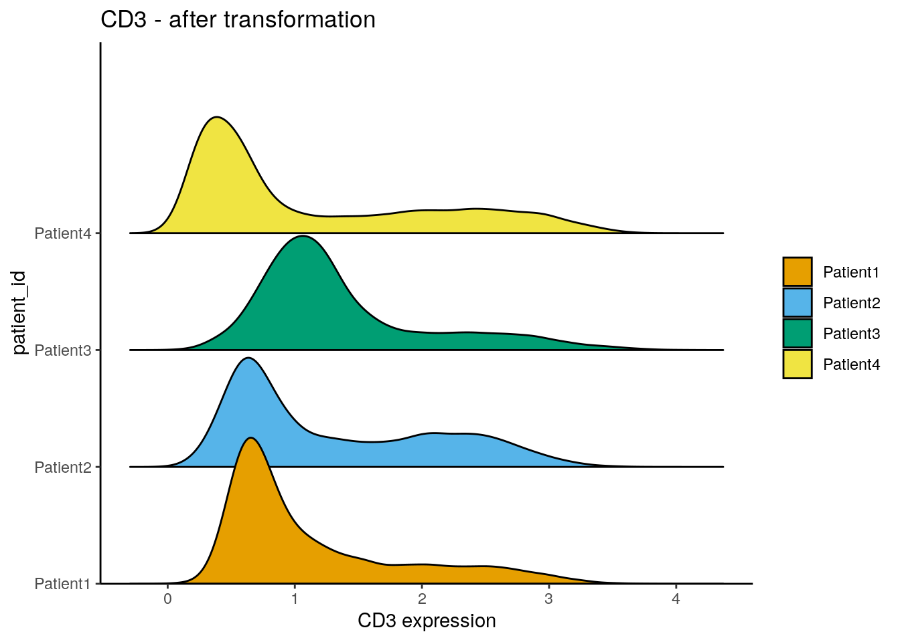

5 Read in the data
This section describes how to read in single-cell data and images into R
after image processing and segmentation (see Section 3).
To highlight examples for IMC data analysis, we provide already processed data at
10.5281/zenodo.6043599.
This data has already been downloaded in Section 4.4 and can
be accessed in the folder data.
We use the imcRtools package to
read in single-cell data extracted using the steinbock framework or the IMC
Segmentation Pipeline. Both image processing approaches also generate
multi-channel images and segmentation masks that can be read into R using the
cytomapper package.
5.1 Read in single-cell information
For single-cell data analysis in R the
SingleCellExperiment
(Amezquita et al. 2019) data container is commonly used within the Bioconductor
framework. It allows standardized access to (i) expression data, (ii) cellular
metadata (e.g., cell type), (iii) feature metadata (e.g., marker name) and (iv)
experiment-wide metadata. For an in-depth introduction to the SingleCellExperiment
container, please refer to the SingleCellExperiment class.
The SpatialExperiment
class (Righelli et al. 2022) is an extension of the SingleCellExperiment class. It
was developed to store spatial data in addition to single-cell data and an
extended introduction is accessible
here.
To read in single-cell data generated by the steinbock framework or the IMC
Segmentation Pipeline, the imcRtools package provides the read_steinbock and
read_cpout functions, respectively. By default, the data is read into a
SpatialExperiment object; however, data can be read in as a
SingleCellExperiment object by setting return_as = "sce". All functions
presented in this book are applicable to both data containers.
5.1.1 steinbock generated data
The downloaded example data (Section 4.4) processed with the steinbock framework can be read in with the read_steinbock function provided by imcRtools. For more information, please refer to
?read_steinbock.
## class: SpatialExperiment
## dim: 40 47859
## metadata(0):
## assays(1): counts
## rownames(40): MPO HistoneH3 ... DNA1 DNA2
## rowData names(12): channel name ... Final.Concentration...Dilution
## uL.to.add
## colnames: NULL
## colData names(8): sample_id ObjectNumber ... width_px height_px
## reducedDimNames(0):
## mainExpName: NULL
## altExpNames(0):
## spatialCoords names(2) : Pos_X Pos_Y
## imgData names(1): sample_idBy default, single-cell data is read in as SpatialExperiment object.
The summarized pixel intensities per channel and cell (here mean intensity) are
stored in the counts slot. Columns represent cells and rows represent channels.
## [,1] [,2] [,3] [,4] [,5]
## MPO 0.5751064 0.4166667 0.4975494 0.890154 0.1818182
## HistoneH3 3.1273082 11.3597883 2.3841440 7.712961 1.4512715
## SMA 0.2600939 1.6720383 0.1535190 1.193948 0.2986703
## CD16 2.0347747 2.5880536 2.2943074 15.629083 0.6084220
## CD38 0.2530137 0.6826669 1.1902979 2.126060 0.2917793Metadata associated to individual cells are stored in the colData slot. After
initial image processing, these metadata include the numeric identifier (ObjectNumber),
the area, and morphological features of each cell. In addition, sample_id stores
the image name from which each cell was extracted and the width and height of the
corresponding images are stored.
## DataFrame with 6 rows and 8 columns
## sample_id ObjectNumber area axis_major_length axis_minor_length
## <character> <numeric> <numeric> <numeric> <numeric>
## 1 Patient1_001 1 12 7.40623 1.89529
## 2 Patient1_001 2 24 16.48004 1.96284
## 3 Patient1_001 3 17 9.85085 1.98582
## 4 Patient1_001 4 24 8.08290 3.91578
## 5 Patient1_001 5 22 8.79367 3.11653
## 6 Patient1_001 6 25 9.17436 3.46929
## eccentricity width_px height_px
## <numeric> <numeric> <numeric>
## 1 0.966702 600 600
## 2 0.992882 600 600
## 3 0.979470 600 600
## 4 0.874818 600 600
## 5 0.935091 600 600
## 6 0.925744 600 600The main difference between the SpatialExperiment and the
SingleCellExperiment data container is the way spatial
locations of all cells are stored. For the SingleCellExperiment container, the
locations are stored in the colData slot while the SpatialExperiment
container stores them in the spatialCoords slot:
## Pos_X Pos_Y
## [1,] 468.5833 0.4166667
## [2,] 515.8333 0.4166667
## [3,] 587.2353 0.4705882
## [4,] 192.2500 1.2500000
## [5,] 231.7727 0.9090909
## [6,] 270.1600 1.0400000The spatial object graphs generated by steinbock (see Section
3.3 are read into a colPair slot with the name
neighborhood of the SpatialExperiment (or SingleCellExperiment) object.
Cell-cell interactions (cells in close spatial proximity) are represented as
“edge list” (stored as SelfHits object). Here, the left side represents the
column indices of the SpatialExperiment object of the “from” cells and the
right side represents the column indices of the “to” cells. For visualization of
the spatial object graphs, please refer to Section 12.2.
## SelfHits object with 257116 hits and 0 metadata columns:
## from to
## <integer> <integer>
## [1] 1 27
## [2] 1 55
## [3] 2 10
## [4] 2 44
## [5] 2 81
## ... ... ...
## [257112] 47858 47836
## [257113] 47859 47792
## [257114] 47859 47819
## [257115] 47859 47828
## [257116] 47859 47854
## -------
## nnode: 47859Finally, metadata regarding the channels are stored in the rowData slot. This
information is extracted from the panel.csv file.
Channels have the same order as the rows in the panel.csv file for which the
keep column is set to 1, and match the order of channels in the multi-channel
images (see Section 5.3). For the example data, channels are
ordered by isotope mass.
## DataFrame with 6 rows and 12 columns
## channel name keep ilastik deepcell cellpose
## <character> <character> <numeric> <numeric> <numeric> <logical>
## MPO Y89 MPO 1 NA NA NA
## HistoneH3 In113 HistoneH3 1 1 1 NA
## SMA In115 SMA 1 NA NA NA
## CD16 Pr141 CD16 1 NA NA NA
## CD38 Nd142 CD38 1 NA NA NA
## HLADR Nd143 HLADR 1 NA NA NA
## Tube.Number Target Antibody.Clone Stock.Concentration
## <numeric> <character> <character> <numeric>
## MPO 2101 Myeloperoxidase MPO Polyclonal MPO 500
## HistoneH3 2113 Histone H3 D1H2 500
## SMA 1914 SMA 1A4 500
## CD16 2079 CD16 EPR16784 500
## CD38 2095 CD38 EPR4106 500
## HLADR 2087 HLA-DR TAL 1B5 500
## Final.Concentration...Dilution uL.to.add
## <character> <character>
## MPO 4 ug/mL 0.8
## HistoneH3 1 ug/mL 0.2
## SMA 0.25 ug/mL 0.05
## CD16 5 ug/mL 1
## CD38 2.5 ug/mL 0.5
## HLADR 1 ug/mL 0.25.1.2 IMC Segmentation Pipeline generated data
The IMC Segmentation Pipeline offers an
alternative approach to multiplexed image processing and segmentation. The
default pipeline is also available via steinbock. The IMC Segmentation
Pipeline is based on Ilastik pixel classification
and image segmentation using CellProfiler. We recommend
to become familiar with the pipeline as it allows flexible extension to more
complicated image analysis and segmentation tasks. For standard image analysis
and segmentation, steinbock is the preferred choice. Please refer to
the documentation
to get an overview on the pipeline.
All relevant output
storing single-cell data is contained in the cpout folder.
For reading in the single-cell measurement, the imcRtools package offers the
read_cpout function:
spe2 <- read_cpout("data/ImcSegmentationPipeline/analysis/cpout/")
rownames(spe2) <- rowData(spe2)$Clean_Target
spe2## class: SpatialExperiment
## dim: 40 43796
## metadata(0):
## assays(1): counts
## rownames(40): MPO HistoneH3 ... DNA1 DNA2
## rowData names(11): Tube.Number Metal.Tag ... ilastik deepcell
## colnames: NULL
## colData names(12): sample_id ObjectNumber ... Metadata_acid
## Metadata_description
## reducedDimNames(0):
## mainExpName: NULL
## altExpNames(0):
## spatialCoords names(2) : Pos_X Pos_Y
## imgData names(1): sample_idSimilar to the steinbock output, cell morphological features and image level
metadata are stored in the colData(spe2) slot, the interaction information
is contained in colPair(spe2, type = "neighborhood") and the mean intensity
per channel and cell is stored in counts(spe2).
5.1.3 Reading custom files
When not using steinbock or the ImcSegmentationPipeline, the single-cell
information has to be read in from custom files. We now demonstrate how
to generate a SpatialExperiment object from single-cell data contained
in individual files. As an example, we use files generated by CellProfiler
as part of the ImcSegmentationPipeline.
First we will read in the single-cell features stored in a CSV file:
library(readr)
cur_features <- read_csv("data/ImcSegmentationPipeline/analysis/cpout/cell.csv")
dim(cur_features)## [1] 43796 941## [1] "ImageNumber" "ObjectNumber"
## [3] "AreaShape_Area" "AreaShape_BoundingBoxArea"
## [5] "AreaShape_BoundingBoxMaximum_X" "AreaShape_BoundingBoxMaximum_Y"This file contains a large number of single-cell features including the cell
identifier (ObjectNumber), the image identifier (ImageNumber), morphological
features (AreaShape_*), the cells’ locations (Location_Center_*) and the
mean pixel intensity per cell and per channel (Intensity_MeanIntensity_FullStack_*).
Now, we split the features into intensity features, cell-specific metadata and the physical location of the cells:
counts <- cur_features[,grepl("Intensity_MeanIntensity_FullStack",
colnames(cur_features))]
meta <- cur_features[,c("ImageNumber", "ObjectNumber", "AreaShape_Area",
"AreaShape_Eccentricity", "AreaShape_MeanRadius")]
coords <- cur_features[,c("Location_Center_X", "Location_Center_Y")]CellProfiler writes out the mean pixel intensities after scaling them
bit a scaling factor which is bit encoding-specific. The images to which
the IMC Segmentation Pipeline was applied were saved with 16-bit encoding.
This means for the example data, the mean pixel intensities need to
be scaled by a factor of 2 ^ 16 - 1 = 65535.
In addition, CellProfiler does not order the channel numerically but rather
as a character; 1, 10, 2, 3, ... rather than 1, 2, 3, .... Therefore we
will need to reorder the channels.
library(stringr)
cur_ch <- str_split(colnames(counts), "_", simplify = TRUE)[,4]
cur_ch <- sub("c", "", cur_ch)
counts <- counts[,order(as.numeric(cur_ch))]From these features we can now construct the SpatialExperiment object.
spe3 <- SpatialExperiment(assays = list(counts = t(counts)),
colData = meta,
sample_id = as.character(meta$ImageNumber),
spatialCoords = as.matrix(coords))Next, we can store the spatial cell graph generated by CellProfiler in the
colPairs slot of the object. Spatial cell graphs are usually stored as edge
list in form of a CSV file. The colPairs slot requires a SelfHits entry
storing an edge list where numeric entries represent the index of the from and
to cell in the SpatialExperiment object. To generate such an edge list, we
need to match the cell IDs contained in the CSV against the cell IDs in the
SpatialExperiment object.
cur_pairs <- read_csv("data/ImcSegmentationPipeline/analysis/cpout/Object relationships.csv")
cur_from <- paste(cur_pairs$`First Image Number`, cur_pairs$`First Object Number`)
cur_to <- paste(cur_pairs$`Second Image Number`, cur_pairs$`Second Object Number`)
edgelist <- SelfHits(from = match(cur_from,
paste(spe3$ImageNumber, spe3$ObjectNumber)),
to = match(cur_to,
paste(spe3$ImageNumber, spe3$ObjectNumber)),
nnode = ncol(spe3))
colPair(spe3, "neighborhood") <- edgelistFor further downstream analysis, we will use the steinbock results.
5.2 Single-cell processing
After reading in the single-cell data, few further processing steps need to be taken.
Add additional metadata
We can set the colnames of the object to generate unique identifiers per cell:
It is also often the case that sample-specific metadata are available externally. For the current data, we need to link the cancer type (also referred to as “Indication”) to each sample. This metadata is available as external CSV file:
library(tidyverse)
# Read patient metadata
meta <- read_csv("data/sample_metadata.csv")
# Extract patient id and ROI id from sample name
spe$patient_id <- str_extract(spe$sample_id, "Patient[1-4]")
spe$ROI <- str_extract(spe$sample_id, "00[1-8]")
# Store cancer type in SPE object
spe$indication <- meta$Indication[match(spe$patient_id, meta$`Sample ID`)]
unique(spe$patient_id)## [1] "Patient1" "Patient2" "Patient3" "Patient4"## [1] "001" "002" "003" "004" "005" "006" "007" "008"## [1] "SCCHN" "BCC" "NSCLC" "CRC"The selected patients were diagnosed with different cancer types:
- SCCHN - head and neck cancer
- BCC - breast cancer
- NSCLC - lung cancer
- CRC - colorectal cancer
Transform counts
The distribution of expression counts across cells is often observed to be skewed towards the right side meaning lots of cells display low counts and few cells have high counts. To avoid analysis biases from these high-expressing cells, the expression counts are commonly transformed or clipped.
Here, we perform counts transformation using an inverse hyperbolic sine
function. This transformation is commonly applied to flow cytometry
data.
The cofactor here defines the expression range on which no scaling is
performed. While the cofactor for CyTOF data is often set to 5, IMC data
usually display much lower counts. We therefore apply a cofactor of 1.
However, other transformations such as log(counts(spe) + 0.01) should be
tested when analysing IMC data.
library(dittoSeq)
dittoRidgePlot(spe, var = "CD3", group.by = "patient_id", assay = "counts") +
ggtitle("CD3 - before transformation")## Warning in (function (mapping = NULL, data = NULL, stat = "density_ridges", :
## Ignoring unknown parameters: `size`
assay(spe, "exprs") <- asinh(counts(spe)/1)
dittoRidgePlot(spe, var = "CD3", group.by = "patient_id", assay = "exprs") +
ggtitle("CD3 - after transformation")## Warning in (function (mapping = NULL, data = NULL, stat = "density_ridges", :
## Ignoring unknown parameters: `size`
Define interesting channels
For downstream analysis such as visualization, dimensionality reduction and
clustering, only a subset of markers should be used. As convenience, we can
store an additional entry in the rowData slot that specifies the markers of
interest. Here, we deselect the nuclear markers, which were primarily used for
cell segmentation, and keep all other biological targets. However, more informed
marker selection should be performed to exclude lowly expressed marker or
markers with low signal-to-noise ratio.
Define color schemes
We will define color schemes for different metadata entries of the data and
conveniently store them in the metadata slot of the SpatialExperiment which
will be helpful for downstream data visualizations. We will use colors from the
RColorBrewer and dittoSeq packages but any other coloring package will
suffice.
library(RColorBrewer)
color_vectors <- list()
ROI <- setNames(brewer.pal(length(unique(spe$ROI)), name = "BrBG"),
unique(spe$ROI))
patient_id <- setNames(brewer.pal(length(unique(spe$patient_id)), name = "Set1"),
unique(spe$patient_id))
sample_id <- setNames(c(brewer.pal(6, "YlOrRd")[3:5],
brewer.pal(6, "PuBu")[3:6],
brewer.pal(6, "YlGn")[3:5],
brewer.pal(6, "BuPu")[3:6]),
unique(spe$sample_id))
indication <- setNames(brewer.pal(length(unique(spe$indication)), name = "Set2"),
unique(spe$indication))
color_vectors$ROI <- ROI
color_vectors$patient_id <- patient_id
color_vectors$sample_id <- sample_id
color_vectors$indication <- indication
metadata(spe)$color_vectors <- color_vectors5.3 Read in images
The cytomapper package allows multi-channel image handling and visualization
within the Bioconductor framework. The most common data format for multi-channel
images or segmentation masks is the TIFF file format, which is used by steinbock
and the IMC segementation pipeline to save images.
Here, we will read in multi-channel images and segmentation masks into a CytoImageList data container. It allows storing multiple multi-channel images and requires matched channels across all images within the object.
The loadImages function is used to read in processed multi-channel images and
their corresponding segmentation masks. Of note: the multi-channel images
generated by steinbock are saved as 32-bit images while the segmentation masks
are saved as 16-bit images. To correctly scale pixel values of the segmentation
masks when reading them in, we will need to set as.is = TRUE.
## All files in the provided location will be read in.## All files in the provided location will be read in.In the case of multi-channel images, it is beneficial to set the channelNames
for easy visualization. Using the steinbock framework, the channel order of
the single-cell data matches the channel order of the multi-channel images.
However, it is recommended to make sure that the channel order is identical
between the single-cell data and the images.
## CytoImageList containing 14 image(s)
## names(14): Patient1_001 Patient1_002 Patient1_003 Patient2_001 Patient2_002 Patient2_003 Patient2_004 Patient3_001 Patient3_002 Patient3_003 Patient4_005 Patient4_006 Patient4_007 Patient4_008
## Each image contains 40 channel(s)
## channelNames(40): MPO HistoneH3 SMA CD16 CD38 HLADR CD27 CD15 CD45RA CD163 B2M CD20 CD68 Ido1 CD3 LAG3 / LAG33 CD11c PD1 PDGFRb CD7 GrzB PDL1 TCF7 CD45RO FOXP3 ICOS CD8a CarbonicAnhydrase CD33 Ki67 VISTA CD40 CD4 CD14 Ecad CD303 CD206 cleavedPARP DNA1 DNA2For visualization shown in Section 11 we will need to
add additional metadata to the elementMetadata slot of the CytoImageList
objects. This slot is easily accessible using the mcols function.
Here, we will store the matched sample_id, patient_id and indication
information within the elementMetadata slot of the multi-channel images and
segmentation masks objects. It is crucial that the order of the images in
both CytoImageList objects is the same.
## [1] TRUE# Extract patient id from image name
patient_id <- str_extract(names(images), "Patient[1-4]")
# Retrieve cancer type per patient from metadata file
indication <- meta$Indication[match(patient_id, meta$`Sample ID`)]
# Store patient and image level information in elementMetadata
mcols(images) <- mcols(masks) <- DataFrame(sample_id = names(images),
patient_id = patient_id,
indication = indication)5.4 Generate single-cell data from images
An alternative way of generating a SingleCellExperiment object directly
from the multi-channel images and segmentation masks is supported by the
measureObjects
function of the cytomapper package. For each cell present in the masks
object, the function computes the mean pixel intensity per channel as well as
morphological features (area, radius, major axis length, eccentricity) and the
location of cells:
## class: SingleCellExperiment
## dim: 40 47859
## metadata(0):
## assays(1): counts
## rownames(40): MPO HistoneH3 ... DNA1 DNA2
## rowData names(0):
## colnames: NULL
## colData names(10): sample_id object_id ... patient_id indication
## reducedDimNames(0):
## mainExpName: NULL
## altExpNames(0):5.5 Accessing publicly available IMC datasets
The imcdatasets
R/Bioconductor package provides a number of publicly available IMC datasets. For
a complete introduction to the package, please refer to the
documentation.
Here, we can read in example data of (Damond et al. 2019) taken from patients diagnosed
with Type I Diabetes. The example here consists of a CytoImageList object of
100 images, a CytoImageList object of 100 segmentation masks and a
SingleCellExperiment object containing 252059 cells. Of note: downloading the
images takes quite some time and uses 8GB of memory.
5.6 Save objects
Finally, the generated data objects can be saved for further downstream processing and analysis.
5.7 Session Info
SessionInfo
## R version 4.3.2 (2023-10-31)
## Platform: x86_64-pc-linux-gnu (64-bit)
## Running under: Ubuntu 22.04.3 LTS
##
## Matrix products: default
## BLAS: /usr/lib/x86_64-linux-gnu/openblas-pthread/libblas.so.3
## LAPACK: /usr/lib/x86_64-linux-gnu/openblas-pthread/libopenblasp-r0.3.20.so; LAPACK version 3.10.0
##
## locale:
## [1] LC_CTYPE=en_US.UTF-8 LC_NUMERIC=C
## [3] LC_TIME=en_US.UTF-8 LC_COLLATE=en_US.UTF-8
## [5] LC_MONETARY=en_US.UTF-8 LC_MESSAGES=en_US.UTF-8
## [7] LC_PAPER=en_US.UTF-8 LC_NAME=C
## [9] LC_ADDRESS=C LC_TELEPHONE=C
## [11] LC_MEASUREMENT=en_US.UTF-8 LC_IDENTIFICATION=C
##
## time zone: Etc/UTC
## tzcode source: system (glibc)
##
## attached base packages:
## [1] stats4 stats graphics grDevices utils datasets methods
## [8] base
##
## other attached packages:
## [1] testthat_3.2.1 RColorBrewer_1.1-3
## [3] dittoSeq_1.14.0 lubridate_1.9.3
## [5] forcats_1.0.0 dplyr_1.1.4
## [7] purrr_1.0.2 tidyr_1.3.0
## [9] tibble_3.2.1 ggplot2_3.4.4
## [11] tidyverse_2.0.0 stringr_1.5.1
## [13] readr_2.1.4 cytomapper_1.14.0
## [15] EBImage_4.44.0 imcRtools_1.8.0
## [17] SpatialExperiment_1.12.0 SingleCellExperiment_1.24.0
## [19] SummarizedExperiment_1.32.0 Biobase_2.62.0
## [21] GenomicRanges_1.54.1 GenomeInfoDb_1.38.5
## [23] IRanges_2.36.0 S4Vectors_0.40.2
## [25] BiocGenerics_0.48.1 MatrixGenerics_1.14.0
## [27] matrixStats_1.2.0
##
## loaded via a namespace (and not attached):
## [1] later_1.3.2 bitops_1.0-7
## [3] svgPanZoom_0.3.4 polyclip_1.10-6
## [5] lifecycle_1.0.4 sf_1.0-15
## [7] rprojroot_2.0.4 lattice_0.21-9
## [9] vroom_1.6.5 MASS_7.3-60
## [11] magrittr_2.0.3 sass_0.4.8
## [13] rmarkdown_2.25 jquerylib_0.1.4
## [15] yaml_2.3.8 httpuv_1.6.13
## [17] sp_2.1-2 cowplot_1.1.2
## [19] DBI_1.2.0 pkgload_1.3.3
## [21] abind_1.4-5 zlibbioc_1.48.0
## [23] ggraph_2.1.0 RCurl_1.98-1.13
## [25] tweenr_2.0.2 GenomeInfoDbData_1.2.11
## [27] ggrepel_0.9.4 RTriangle_1.6-0.12
## [29] terra_1.7-65 pheatmap_1.0.12
## [31] units_0.8-5 svglite_2.1.3
## [33] DelayedMatrixStats_1.24.0 codetools_0.2-19
## [35] DelayedArray_0.28.0 DT_0.31
## [37] scuttle_1.12.0 ggforce_0.4.1
## [39] tidyselect_1.2.0 raster_3.6-26
## [41] farver_2.1.1 viridis_0.6.4
## [43] jsonlite_1.8.8 BiocNeighbors_1.20.1
## [45] e1071_1.7-14 ellipsis_0.3.2
## [47] tidygraph_1.3.0 ggridges_0.5.5
## [49] systemfonts_1.0.5 tools_4.3.2
## [51] Rcpp_1.0.11 glue_1.6.2
## [53] gridExtra_2.3 SparseArray_1.2.3
## [55] xfun_0.41 HDF5Array_1.30.0
## [57] shinydashboard_0.7.2 withr_2.5.2
## [59] fastmap_1.1.1 rhdf5filters_1.14.1
## [61] fansi_1.0.6 digest_0.6.33
## [63] timechange_0.2.0 R6_2.5.1
## [65] mime_0.12 colorspace_2.1-0
## [67] jpeg_0.1-10 utf8_1.2.4
## [69] generics_0.1.3 data.table_1.14.10
## [71] class_7.3-22 graphlayouts_1.0.2
## [73] htmlwidgets_1.6.4 S4Arrays_1.2.0
## [75] pkgconfig_2.0.3 gtable_0.3.4
## [77] XVector_0.42.0 brio_1.1.4
## [79] htmltools_0.5.7 bookdown_0.37
## [81] fftwtools_0.9-11 scales_1.3.0
## [83] png_0.1-8 knitr_1.45
## [85] tzdb_0.4.0 rjson_0.2.21
## [87] proxy_0.4-27 cachem_1.0.8
## [89] rhdf5_2.46.1 KernSmooth_2.23-22
## [91] parallel_4.3.2 vipor_0.4.7
## [93] concaveman_1.1.0 desc_1.4.3
## [95] pillar_1.9.0 grid_4.3.2
## [97] vctrs_0.6.5 promises_1.2.1
## [99] distances_0.1.10 beachmat_2.18.0
## [101] xtable_1.8-4 archive_1.1.7
## [103] beeswarm_0.4.0 evaluate_0.23
## [105] magick_2.8.2 cli_3.6.2
## [107] locfit_1.5-9.8 compiler_4.3.2
## [109] rlang_1.1.2 crayon_1.5.2
## [111] labeling_0.4.3 classInt_0.4-10
## [113] ggbeeswarm_0.7.2 stringi_1.8.3
## [115] viridisLite_0.4.2 BiocParallel_1.36.0
## [117] nnls_1.5 munsell_0.5.0
## [119] tiff_0.1-12 Matrix_1.6-4
## [121] hms_1.1.3 sparseMatrixStats_1.14.0
## [123] bit64_4.0.5 Rhdf5lib_1.24.1
## [125] shiny_1.8.0 highr_0.10
## [127] igraph_1.6.0 bslib_0.6.1
## [129] bit_4.0.5